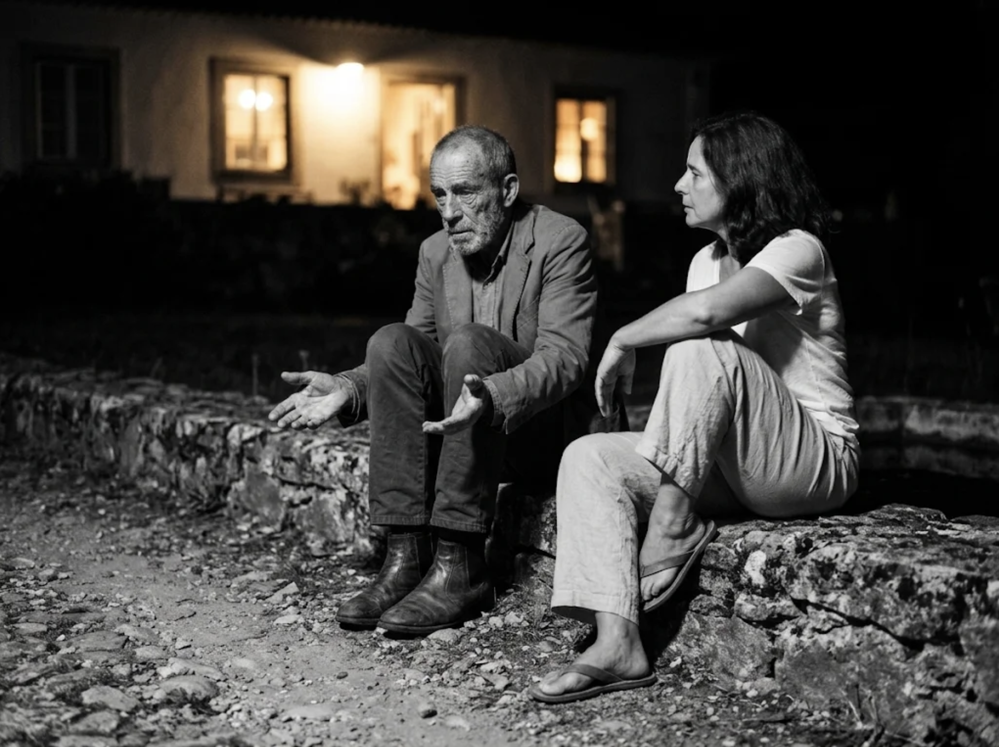

Para lá ou para longe?

Simão afastara-se do grupo depois do jantar. Estava sentado no muro baixo do tanque, de costas para as luzes da casa, a enrolar um cigarro que não acendia. Laura, a orientadora do retiro, veio pelo carreiro de terra sem lanterna, sentou-se no mesmo muro, a dois metros dele, e ficou a olhar para o mesmo escuro.
— Não o acendes? — perguntou ela, ao fim de um tempo.
— Estou a decidir. Na minha idade, cada cigarro é uma decisão de investimento.
Laura sorriu e não disse nada. Um sapo qualquer começou a cantar no tanque e calou-se.
— Tu percebes de pessoas — disse ele.
— De algumas.
— Como é que se chega a alguém que não nos quer por perto?
— Alguém?
Simão rodou o cigarro entre os dedos.
— O meu filho.
Laura esperou.
— Soube que existia há uns meses. Tem quase quarenta anos. Fui a Creta no verão. Ele disse o que tinha a dizer e foi-se embora. — Pausa. — Tinha razão em quase tudo.
— Quase?
— Disse que eu tinha ido lá à procura de absolvição. Para poder morrer em paz.
— E foste?
Simão acendeu finalmente o cigarro. A chama mostrou-lhe a cara por um segundo e apagou-a outra vez.
— É possível.
— Então o que queres agora? Chegar a ele, ou que ele te absolva?
— Faz diferença?
— Diz-me tu.
Ele não disse. Fumou. O fumo ficou parado no ar frio, sem vento que o levasse.
— Ele tem mulher. E uma miúda, pequena. — A voz baixou meio tom. — Nem sei como se chamam.
— Gostavas de saber?
— Gostava de ter direito a saber.
Laura deixou a frase assentar. Não a corrigiu.
— E se tivesses esse direito, o que fazias com ele?
Simão abriu a boca e voltou a fechá-la. Passou a mão pela cara, devagar, de cima para baixo, como quem limpa pó.
— Não sei, Laura. Estou cansado.
— Cansado de quê?
— De recomeçar. Passei a vida a começar do zero noutro sítio. Era o meu único talento. — Soltou um riso curto, sem graça. — Agora chego ao zero e já não tenho com que começar.
Ficaram calados. Ao longe, alguém riu-se no refeitório.
— Vi coisas que pouca gente viu — continuou ele. — Montanhas onde o ar não chega para respirar. O fim do mundo, literalmente, com placa e tudo. A vida é espantosa. E ao mesmo tempo é uma merda. E eu não consigo pôr as duas coisas na mesma sala.
— Tens de pôr?
Simão olhou para ela pela primeira vez.
— Parece que sim.
— Parece a quem?
Ele não respondeu. Voltou ao escuro.
— O que te apetecia agora, se pudesses? — perguntou Laura.
— Desaparecer. — Bateu a cinza no muro. — Uns tempos. Dormir uma semana inteira.
— Desaparecer como?
Simão virou a cabeça para ela. Demorou.
— Não é isso que estás a pensar.
— Não estou a pensar nada. Estou a perguntar.
O cigarro ardeu-lhe entre os dedos sem que ele o levasse à boca.
— Não é isso — disse por fim. — Já houve alturas em que era. Agora não.
— Está bem. — Laura não desviou o olhar. — Se passar a ser, dizes-me.
— Digo.
Ela assentiu, uma vez, e só então voltou a olhar para o tanque.
— Já desapareci tantas vezes que devia ter diploma — disse Simão.
— E resultou?
— Funcionava. Durante uns tempos.
— E depois?
Ele pensou.
— Depois chegava eu também.
Laura sorriu, mas não era um sorriso de troça.
— O meu erro — disse Simão — foi achar que tinha nascido para lobo solitário.
— Quantos anos de experiência?
— Quarenta. Mais.
— E o resultado?
Simão riu-se, desta vez a sério, um riso rouco que acabou em tosse.
— Estás a olhar para ele.
O sapo voltou a cantar. Simão esmagou o cigarro no muro e guardou a beata no bolso do casaco, com o cuidado de quem não deixa rasto.
— Podia ficar aqui uns dias — disse ele, mais para si do que para ela. — Sem resolver nada. Fazer o que me apetecer, quando me apetecer. Já vivi assim.
— E como foi?
— Livre. — Pausa. — E morto. — Esfregou as mãos uma na outra. — Conheci um homem, na Índia, que guardava o pó da montanha em potes. Arrumadinhos, com etiqueta. Passei a vida a fazer o mesmo. A guardar tudo e a não mexer em nada.
Laura não disse nada.
— Não quero parar — disse Simão. — Preciso de fazer alguma coisa. Preciso de sentir que isto ainda mexe.
— Fazer o quê?
— Não sei. Ir. Mexer-me.
Laura levantou-se e sacudiu as calças.
— Ir para onde, Simão? — perguntou, sem pressa. — Para lá ou para longe?
Ele ficou a olhar para ela.
— Lado nenhum. Já fui a todos. Nenhum ficou.
Simão baixou os olhos para as botas.
— E Creta?
Simão suspirou. Levantou a cabeça e olhou para Laura.
— Não preciso de fazer nada. — A mão direita subiu-lhe ao peito e três dedos entraram pela abertura da camisa, sobre a tatuagem. — Preciso d…
A voz subiu-lhe de tom e quebrou-se a meio da palavra. Simão encheu os pulmões de ar, como se não respirasse há muito tempo. Há quarenta anos. Mais.
Laura ficou imóvel, de olhos ternos e uma expressão pacífica. Acompanhou-lhe a respiração e abrandou a sua, devagar, até ele a seguir.
— Não precisas de responder… agora — disse ela.
— Ainda bem.
Laura virou-se na direção do carreiro, deu dois passos, parou e voltou-se para Simão.
Sorriu.
Simão olhou-a, as mãos pousadas nas coxas, as palmas ligeiramente viradas para cima.
Laura aproximou-se e pousou-lhe a mão no ombro. Olhou-o nos olhos durante uns segundos. Depois voltou-se e seguiu pelo carreiro, sem lanterna, e a escuridão engoliu-a antes de chegar à casa.
Simão ficou. Ao fim de um tempo tirou do bolso do casaco um papel dobrado e a caneta de traço fino. Alisou o papel no joelho e ficou muito tempo a olhar para ele.
“Geada, ”
Parou de escrever. Amachucou o papel numa pequena bola e guardou-o no bolso de fora do casaco. Pegou no telemóvel. Procurou o contacto.
— Simão?
— Geada — disse Simão, com a voz trémula.
Ficaram em silêncio, apenas com o som de ambas as respirações ao telefone.
— Obrigado — disse Simão.
— Eu sei. Demoraste.
Passados mais uns segundos, desligaram a chamada.
Simão retirou a pequena bola de papel do bolso do casaco. Desfez a bola. Pegou na caneta. Ficou a olhar para o nome lá escrito, «Geada».
Parou uns momentos. Olhou para cima, e lá estava ela, de pé à sua frente. A Morte. Como sempre. A mão estendida com o indicador apontado ao seu peito, para a tatuagem: um coração e, preso a ele por um cordão umbilical, um bebé enrolado sobre si mesmo.
Simão suspirou.
— Sim… eu sei… amor.
A Morte baixou a mão. Aproximou o rosto do de Simão. Agora, no lugar de frio, Simão sentia o acalento da presença familiar. A Morte pousou-lhe as mãos nos ombros e esfumou-se de seguida.
Simão olhou para o espaço vazio por baixo de «Geada» e começou a escrever:
“Quero.”
← Voltar a Livros & Ensaios